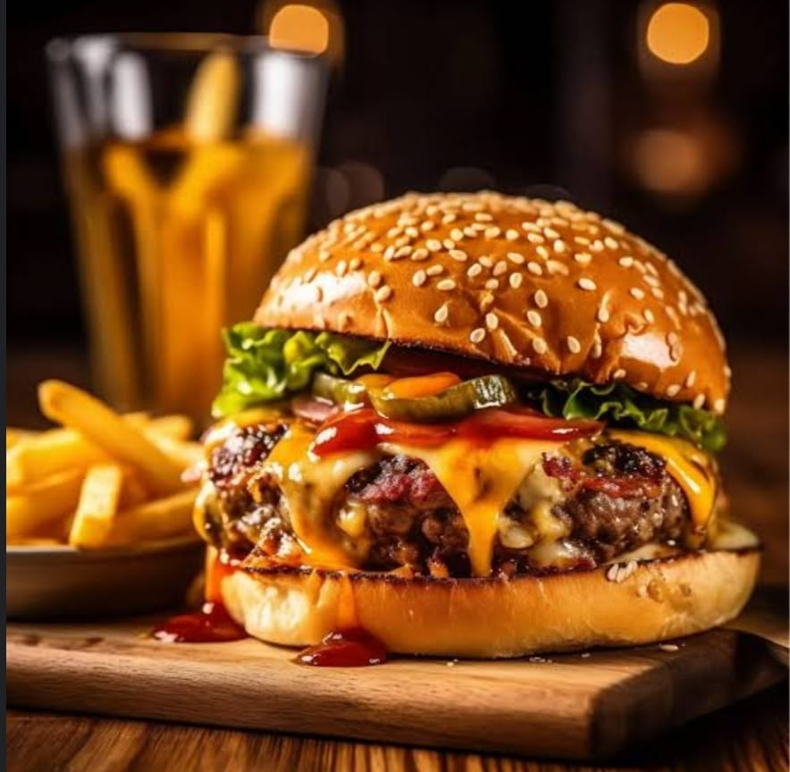

|  |
Founded in [2003], The Restron ,as a humble eatery with a vision to bring a unique dining experience to [City Name]. Our journey started with a small team of passionate chefs and hospitality professionals dedicated to excellence. From the very beginning, Restron has been committed to using fresh, locally-sourced ingredients and innovative cooking techniques. Over the years, we have grown from a quaint neighborhood spot to a beloved destination for food enthusiasts, known for our creative dishes and warm atmosphere. Our dedication to quality and customer satisfaction has earned us numerous accolades and a loyal following. As we continue to evolve, our mission remains the same: to provide an exceptional dining experience that delights the senses and celebrates the joy of good food. Join us at Restron and be a part of our story as we continue to create culinary magic in [Kota, Rajasthan].
Welcome to Restron, where culinary art meets exceptional hospitality. Nestled in the heart of [City Name], our restaurant is a haven for food enthusiasts seeking a unique dining experience.
At Restron, we believe that every meal tells a story. Our talented chefs craft each dish with passion and precision, using only the finest, locally-sourced ingredients. Whether you're savoring our signature dishes or exploring our seasonal menu, you'll find a delightful blend of traditional flavors and modern techniques.
Our elegant yet cozy ambiance provides the perfect setting for any occasion, be it a romantic dinner, a family gathering, or a business lunch. We are dedicated to delivering impeccable service, ensuring that every guest feels welcomed and valued.
Join us at Restron, where we turn meals into memorable moments. We look forward to serving you and creating an unforgettable dining experience.
Feel free to customize it further to better match your restaurant's unique identity and values.